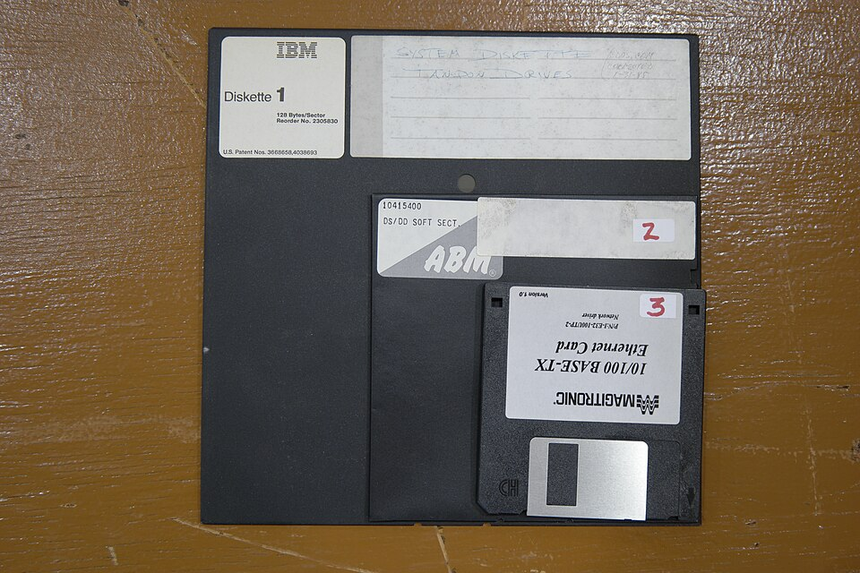
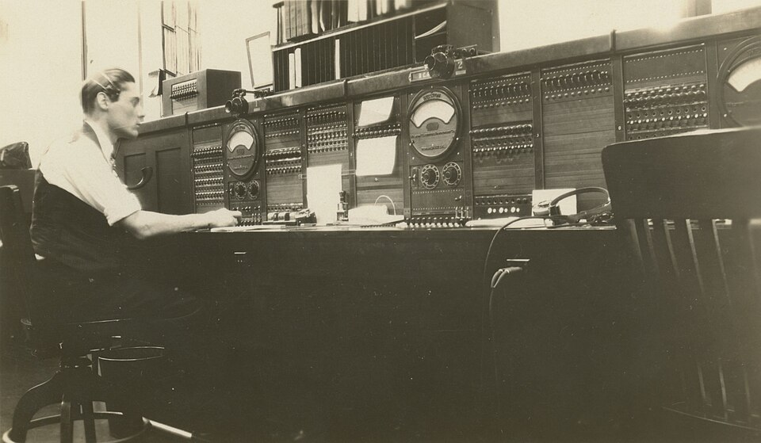
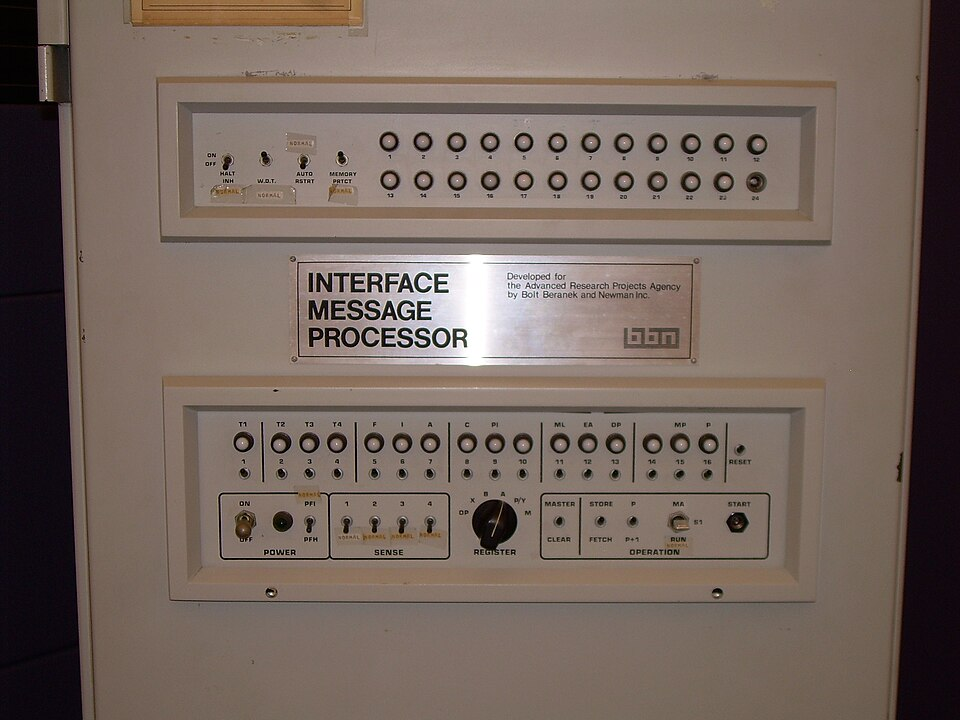
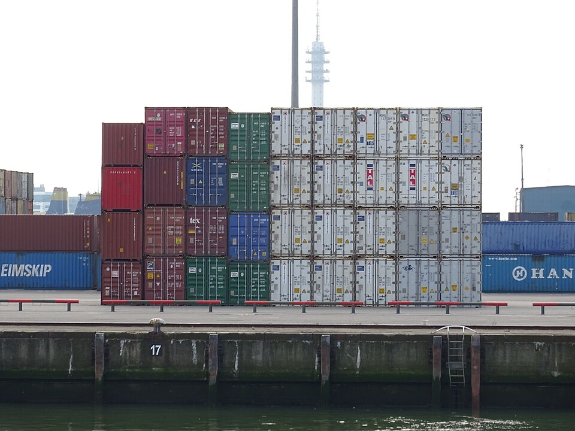
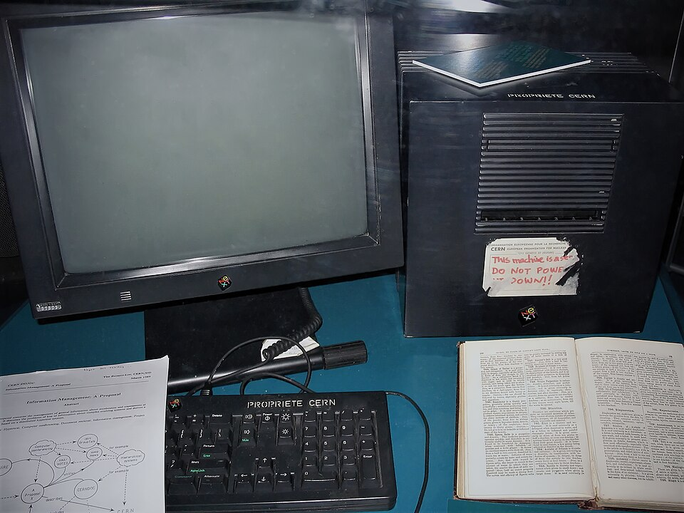

De 1962 a 1995, em ordem e com as pessoas. O episódio anterior parou em 1990; este volta a 1962 de propósito, porque a rede foi construída em silêncio, dentro da universidade, enquanto o computador de mesa nascia lá fora. Quando o áudio pedir, aperte Próximo.
O que trava agora. Milhões de máquinas iguais, e cada uma é uma ilha. Levar um arquivo pra outra é gravar num disquete e atravessar a sala com ele na mão.
O problema de verdade. Ligar dois computadores por um fio já se fazia. O difícil é fazer redes diferentes, de donos diferentes, virarem uma rede só sem ninguém no comando. A internet não é uma rede: é um acordo entre redes.
imagem real

O jeito de um computador falar com o outro, antes da rede · foto: Kevin Savetz, CC BY 2.0
1962 · Licklider, na ARPA
Um caminho reservado só pra você
imagem real

Cada ligação era um caminho inteiro, reservado até desligar · foto: Gary Langebartels / Fortepan Iowa, CC BY-SA 4.0
Na ligação, a companhia monta um caminho físico entre as duas pontas e reserva ele pra vocês, inclusive no silêncio. Computador não fala assim: manda uma rajada curta e fica calado o resto do tempo. Alugar linha dedicada é pagar o dia inteiro por alguns segundos.
e caminho reservado tem um trajeto só: cortou no meio, caiu. Em 1962 J. C. R. Licklider, psicólogo dirigindo a computação da ARPA, pôs dinheiro numa rede que não fosse assim; o sucessor dele tinha três terminais na mesa, um por computador, e queria um só
1961 a 1967 · Kleinrock, Baran, Davies e Larry Roberts
Picar a mensagem em pedaços
a ideia
em vez de reservar caminho, picar a mensagem em pedaços e escrever em cada um o endereço e o número na fila
cada pedaço viaja sozinho
cada ponto lê a etiqueta e empurra pro vizinho mais perto do destino. Chegam fora de ordem; quem recebe remonta pelo número
a mudança em caixas
a ligação fecha a estrada pro seu caminhão. A mudança despacha caixas numeradas por ruas diferentes, e quem recebe remonta
três consequências
ninguém reserva nada e o fio leva mil conversas. Caiu um caminho, o pedaço desvia. E não existe chefe: cada ponto só empurra pra frente
A terceira é a que mais importa pro resto do episódio.
imagem real

O IMP, construído pela BBN: o único hardware novo desta história, uma máquina só pra ler o endereço do pedaço e passar adiante · foto: Carlo Nardone, CC BY-SA 2.0
29 de outubro de 1969 · Charley Kline, na UCLA
L, O
imagem realA linha manuscrita das 22:30 é a prova: duas máquinas se falaram · foto: Charles S. Kline / UCLA, domínio público
Charley Kline, 21 anos, estudante de Kleinrock, ia entrar da UCLA na máquina do SRI, a centenas de quilômetros: bastava escrever LOGIN. A outra caiu na segunda letra. A primeira mensagem da ARPANET foi L, O. No fim do ano, quatro máquinas.
o motivo oficial era dividir computador caro à distância. O que a data prova é outra coisa: os pedaços chegam, se remontam, e ninguém precisou coordenar
1971 · Ray Tomlinson, na BBN
O uso que ninguém encomendou
o improviso
Ray Tomlinson junta um programa de deixar recado com um programa de copiar arquivo pela rede, e nasce o correio eletrônico
o símbolo
faltava separar, num endereço só, a pessoa da máquina. A arroba serviu porque quase ninguém usava e porque em inglês já queria dizer em
o que pegou
em poucos anos mandar recado pra pessoa virou o uso principal da rede, na frente do motivo pelo qual ela foi construída
a lição
quem constrói não decide pra que serve. A rede foi feita pra máquina falar com máquina; o que pegou foi gente falando com gente
quem@em qual máquina
1974 · Vint Cerf e Bob Kahn
Redes que não se entendem
imagem real

Ninguém trocou de veículo. A carga passa de um pro outro sem ser aberta · foto: AgainErick, CC BY-SA 4.0
Rádio, satélite, universidade, empresa, outro país: dentro de cada rede tudo funciona, entre duas, nada. E não havia quem mandasse todo mundo trocar de rede. A saída foi não mexer em rede nenhuma: um envelope comum que qualquer uma aceita carregar.
TCP/IP, em duas metades: o IP cuida do endereço e empurra o pacote de rede em rede; o TCP confere nas pontas se chegou tudo e remonta na ordem
primeiro de janeiro de 1983 · Jon Postel
O dia em que todo mundo trocou de língua
o dia
Jon Postel, que cuidava dos números e dos documentos da rede, escreve o plano: as máquinas da ARPANET passam todas pra língua nova no mesmo dia. Quem não se preparou ficou de fora
por que junto
metade da rede numa língua e metade na outra não conversa. Ou muda todo mundo, ou não muda ninguém
o nascimento
a internet nasce aqui, e não de um cabo novo: de um acordo. Qualquer rede que carregue o envelope está dentro, sem pedir licença
por que venceu
não por ser a melhor rede. Por exigir o mínimo: ninguém jogou a própria rede fora, só aceitou carregar a caixa
É a lição do padrão aberto do episódio anterior, agora do tamanho do mundo.
1983 · Paul Mockapetris
O nome no lugar do número
o problema
no envelope, cada máquina é um número. Número funciona pra máquina e não funciona pra gente
a lista única
no começo, um arquivo só, atualizado à mão, com todos os nomes e números. Com dezenas de milhares de máquinas, impossível, e é justamente a peça central que a rede evitou a vida inteira
a saída
o DNS, de Paul Mockapetris com Postel: o nome é lido em pedaços, da direita pra esquerda, e cada pedaço tem alguém responsável por saber o próximo
a lista que não mora em lugar nenhum
você pergunta pra quem está perto; se ele não sabe, sabe pra quem perguntar. Ninguém tem a lista toda e qualquer nome é encontrado
Nome novo se cria sem avisar um órgão central, porque quem manda no seu pedaço é você.
1989 a 1993 · Tim Berners-Lee, no CERN
O motivo aparece
imagem real

O primeiro servidor da teia, num laboratório de física na Europa · foto: Coolcaesar, CC BY-SA 3.0
Tim Berners-Lee, físico inglês no CERN, cansado de não achar documento guardado cada um do seu jeito, propõe três peças: um endereço por documento, uma regra de pedir e entregar, e texto em que uma palavra leva a outro. Escreve o servidor e o navegador num NeXT.
agosto de 1991 vai pro ar pra quem quiser. 30 de abril de 1993 cai em domínio público, de graça. Se tivesse sido cobrado, a história seria outra
1993 · Marc Andreessen, no NCSA
A cara
imagem realA mesma virada do Macintosh, agora na rede · captura: Charles Severance, CC0
Os primeiros programas de ler a teia mostravam só texto e rodavam em máquina de universidade. O Mosaic, de Marc Andreessen, estudante de 21 anos, mostra a imagem junto com o texto, roda na máquina de casa e se usa com o mouse. É aqui que os dois episódios se encontram.
1995: a espinha da rede deixa de ser bancada pelo governo americano e a rede abre pro comércio
onde isto para
1995
as pessoas, na ordem
Licklider pagou. Kleinrock, Baran e Davies pensaram o pacote. Larry Roberts desenhou a rede. Kline mandou o L e o O. Tomlinson inventou o uso que ninguém pediu. Cerf e Kahn fizeram o envelope. Postel trocou a língua de todo mundo num dia. Mockapetris pôs o nome no lugar do número. Berners-Lee escreveu a teia e deu de graça. Andreessen pôs imagem e levou pro PC de casa
a lição da etapa
as duas viradas foram ganhas por quem exigiu menos, não por quem fez melhor. O padrão aberto venceu o projeto fechado, e o acordo entre redes venceu a rede perfeita
o que muda agora
máquina em todo lugar, todas ligadas, todas despejando dado na rede. Escrever a regra passo a passo, como a série fez até aqui, não dá conta de reconhecer um rosto numa foto ou traduzir uma frase
E se, em vez de a gente escrever a regra pra máquina seguir, a gente deixasse a máquina achar a regra sozinha, olhando os dados?